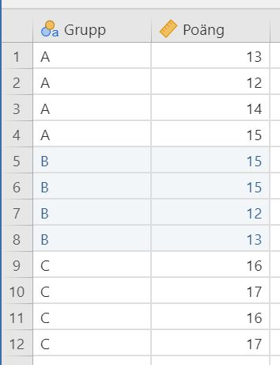
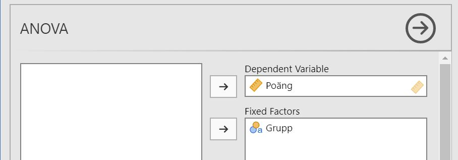
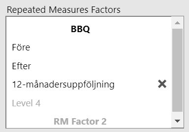
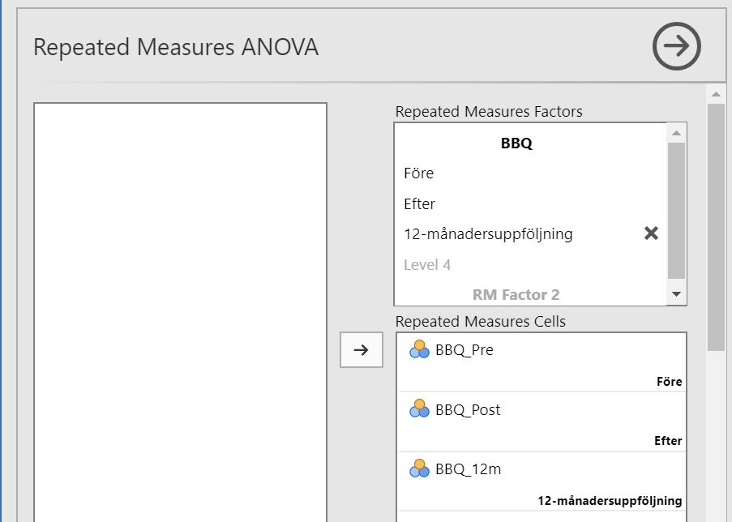
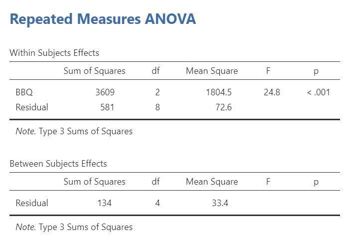

Part 4 ANOVA
This chapter shows how to conduct an ANOVA (4.1) and its extensions factorial ANOVA (4.2), repeated measures ANOVA (4.3), and mixed ANOVA (4.4).
4.1 ANOVA
To perform a “simple” ANOVA you need a grouping variable and an outcome variable (continuous). Therefore, your data should look something like this:
Select
Analyses -> ANOVA -> ANOVA.

Move your outcome variable to Dependent Variable and your grouping variable to Fixed Factors.
The results is shown in the right pane:

4.2 Factorial ANOVA
To perform a factorial ANOVA you need two grouping variables and one outcome variable (continuous). Therefore, your data should look something like this:

Select
Analyses -> ANOVA -> ANOVA.
Move your outcome variable to Dependent Variable and your grouping variables to Fixed Factors.

The result is shown in the right pane:

4.3 Repeated measures ANOVA
To perform a repeated measures ANOVA you need an outcome variable (continuous) where every measurement has its own column. Therefore, your data should look something like this:

Select
Analyses -> ANOVA -> Repeated Measures ANOVA.

In the box Repeated Measures Factors: write the name of your outcome variable (e.g. My_scale) and name the levels for each measurement occasion (e.g. Pre, Post and 12 month follow-up). The images below shows the box with default values (left) and when the values has been set (right).

->Move your outcome variables to their respective cells in Repeated Measures Cells.
The results are shown in the right pane:

4.4 Mixed ANOVA
To perform a mixed ANOVA, you need a grouping variable and an outcome variable (continuous) where each measurement occasion has its own column. Therefore, your data should look something like this:

Select
Analyses -> ANOVA -> Repeated Measures ANOVA.
In the box Repeated Measures Factors: write the name of your outcome variable (e.g. My_scale) and name the levels for each measurement occasion (e.g. Pre, Post and 12 month follow-up). The below images illustrates this.
->Move your outcome variables to their respective cells in Repeated Measures Cells.
Move your grouping variables to Between Subject Factors.

The result is shown in the right panel: